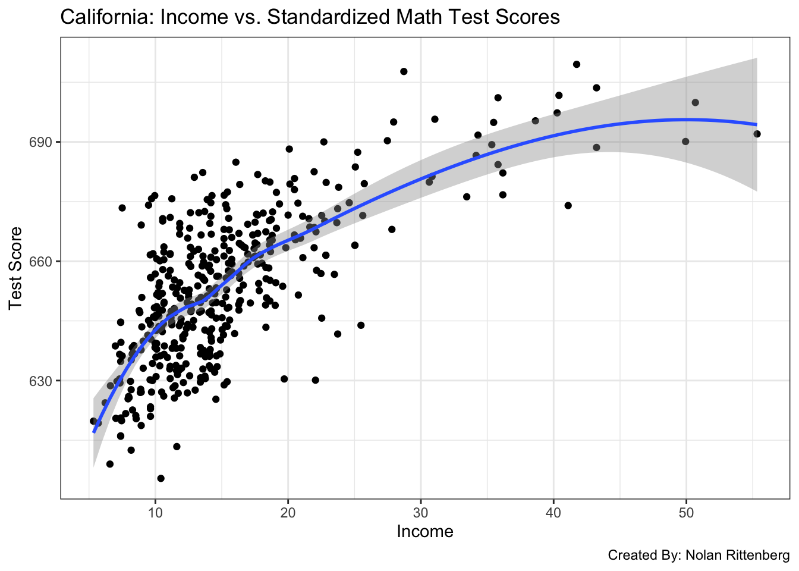
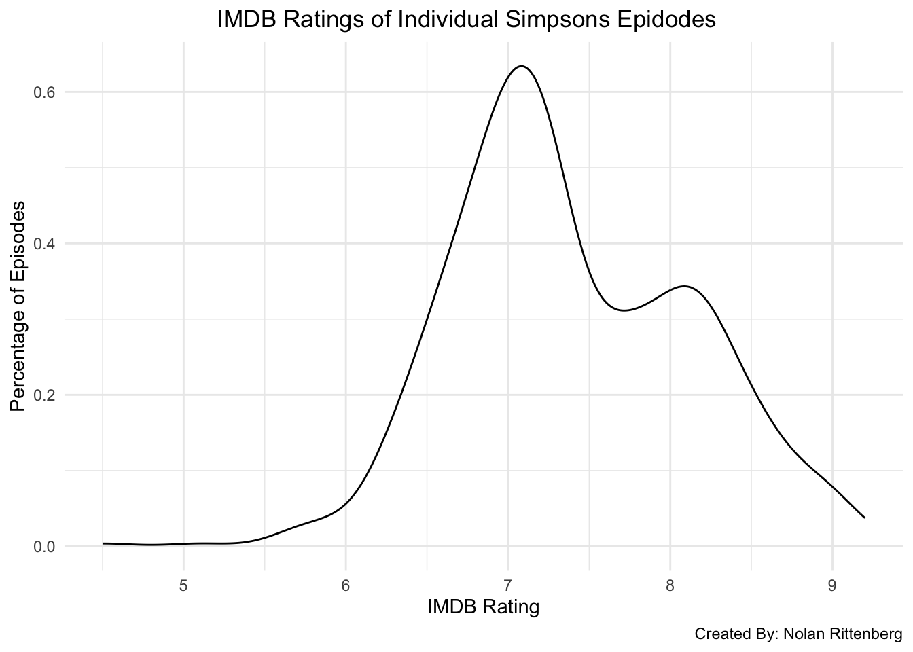

── Attaching core tidyverse packages ──────────────────────── tidyverse 2.0.0 ──
✔ dplyr 1.1.4 ✔ readr 2.1.5
✔ forcats 1.0.0 ✔ stringr 1.5.1
✔ ggplot2 3.5.1 ✔ tibble 3.2.1
✔ lubridate 1.9.4 ✔ tidyr 1.3.1
✔ purrr 1.0.2
── Conflicts ────────────────────────────────────────── tidyverse_conflicts() ──
✖ dplyr::filter() masks stats::filter()
✖ dplyr::lag() masks stats::lag()
ℹ Use the conflicted package (<http://conflicted.r-lib.org/>) to force all conflicts to become errors
CA_Test_Scores =read.csv("https://vincentarelbundock.github.io/Rdatasets/csv/AER/CASchools.csv")ggplot(CA_Test_Scores, aes(x = income, y = math)) +geom_point() +geom_smooth() +theme_bw() +labs(title ="California: Income vs. Standardized Math Test Scores",x ="Income",y ="Test Score",caption ="Created By: Nolan Rittenberg")
`geom_smooth()` using method = 'loess' and formula = 'y ~ x'

::: This is a bivariate graph that shows the correlation between household income and standardized math test scores in the state of California. Both variables are numerical. From this graph, it can be concluded that lower household income is correlated with a lower standardized math test score. :::
date location mintemp maxtemp rainfall evaporation sunshine
1 2020-01-01 Wollongong 17.1 23.1 0 NA NA
2 2020-01-02 Wollongong 17.7 24.2 0 NA NA
3 2020-01-03 Wollongong 19.7 26.8 0 NA NA
4 2020-01-04 Wollongong 20.4 35.5 0 NA NA
5 2020-01-05 Wollongong 19.8 21.4 0 NA NA
6 2020-01-06 Wollongong 18.3 22.9 0 NA NA
windgustdir windgustspeed winddir9am winddir3pm windspeed9am windspeed3pm
1 SSW 39 SSW SSE 20 15
2 SSW 37 S ENE 13 15
3 NE 41 NNW NNE 7 17
4 SSW 78 NE NNE 15 17
5 SSW 57 SSW S 31 35
6 NE 35 ESE NE 17 20
humidity9am humidity3pm pressure9am pressure3pm cloud9am cloud3pm temp9am
1 69 64 1014.9 1014.0 8 1 19.1
2 72 54 1020.1 1017.7 7 1 19.8
3 72 71 1017.5 1013.0 6 NA 23.4
4 77 69 1008.8 1003.9 NA NA 24.5
5 70 75 1018.9 1019.9 NA 7 20.7
6 71 71 1021.2 1018.2 NA NA 20.9
temp3pm raintoday risk_mm raintomorrow
1 22.9 No 0.0 No
2 23.6 No 0.0 No
3 25.7 No 0.0 No
4 26.7 No 0.0 No
5 20.0 No 0.0 No
6 22.6 No 0.8 No
ggplot(weather, aes(x = humidity9am, fill = raintoday)) +geom_density(alpha =0.7) +labs(x ="9AM Humidity", fill ="Rain") +theme_bw()
Warning: Removed 26 rows containing non-finite outside the scale range
(`stat_density()`).
Warning: Removed 3 rows containing non-finite outside the scale range
(`stat_density()`).

Source Code
---title: "Best Work Practice"---Use this file for practice with the **univariate viz** in-class activity. Refer to the class website for details.```{r}CA_Test_Scores =read.csv("https://vincentarelbundock.github.io/Rdatasets/csv/AER/CASchools.csv")head(CA_Test_Scores)library(tidyverse)``````{r}CA_Test_Scores =read.csv("https://vincentarelbundock.github.io/Rdatasets/csv/AER/CASchools.csv")ggplot(CA_Test_Scores, aes(x = income, y = math)) +geom_point() +geom_smooth() +theme_bw() +labs(title ="California: Income vs. Standardized Math Test Scores",x ="Income",y ="Test Score",caption ="Created By: Nolan Rittenberg")```:::This is a bivariate graph that shows the correlation between household income and standardized math test scores in the state of California. Both variables are numerical. From this graph, it can be concluded that lower household income is correlated with a lower standardized math test score.:::```{r}library(tidyverse)# Import dataweather <-read.csv("https://mac-stat.github.io/data/weather_3_locations.csv") |>mutate(date =as.Date(date)) head(weather)ggplot(weather, aes(x = humidity9am, fill = raintoday)) +geom_density(alpha =0.7) +labs(x ="9AM Humidity", fill ="Rain") +theme_bw()ggplot(weather, aes(x = ))``````{r}Chicago_Crime =read.csv("https://data.cityofnewyork.us/api/views/833y-fsy8/rows.csv?accessType=DOWNLOAD")head(Chicago_Crime)``````{r}simpsons_episodes =read.csv("/Users/nrittenberg24/Desktop/simpsons_episodes.csv")head(simpsons_episodes)dim(simpsons_episodes)ggplot(simpsons_episodes, aes(x = imdb_rating)) +geom_density() +theme_minimal() +labs(title =" IMDB Ratings of Individual Simpsons Epidodes",x ="IMDB Rating",y ="Percentage of Episodes",caption ="Created By: Nolan Rittenberg")```